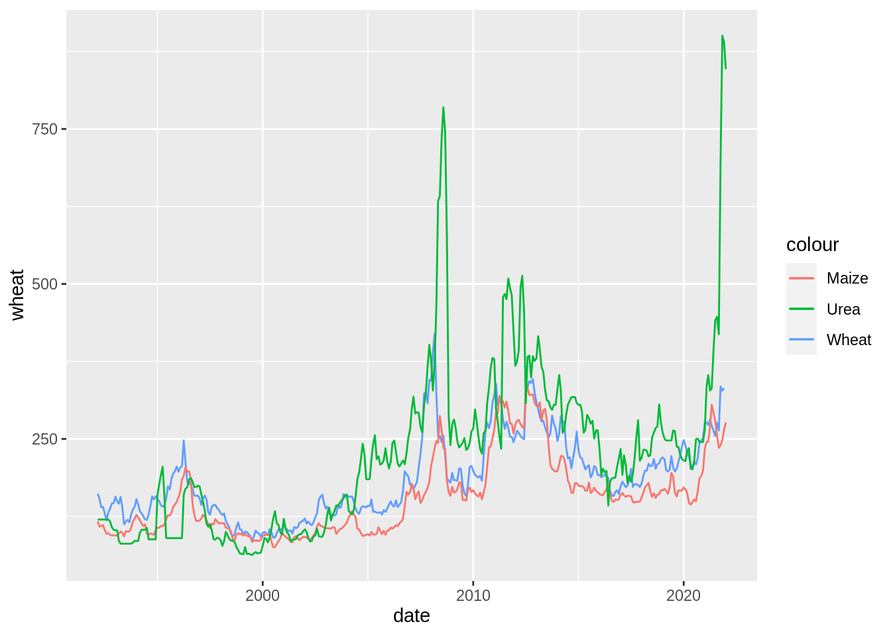
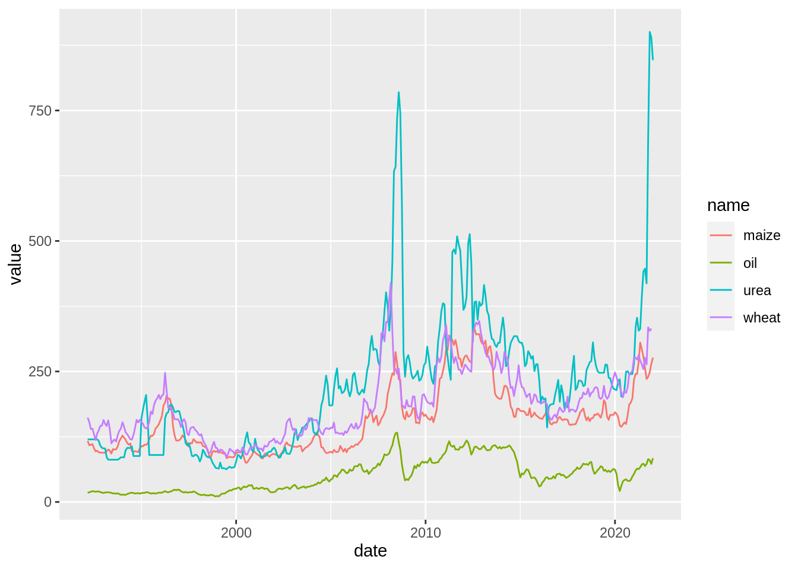

library(tidyverse)
library(readr) # install.packages("readr")
library(readxl) # install.packages("readxl")
library(janitor) # install.packages("janitor")
library(skimr) # install.packages("skimr")AE03-01 Import, cleaning, summary plot
Setups
We will us tidyverse for data wrangling and readr and readxl for data import.
Exercise 1. Load clean and plot data from Excel
Here, we will explore the data from the file called commodity-prices.xlsx in the data folder.
Ex. 1.1 Inspect the file in excel: readxl::excel_sheets()
Open the file in Excel and inspect it.
- What sheets are there?
- Where is the data?
Use function excel_sheets() to check what sheets does R sees in this file. Please note that you need to provide path to the file manually. Thus:
Create an object
path_prices- and assign to it a value of the string with the path to the file.
- This string may look like:
./path_to_folder/file_name.ext. - Make sure that you specify the path exactly as it is with the file extension.
- Make sure that in the path, there are no extra spaces of characters which are not present in the file path.
Execute function
excel_sheets()specifying in the arguments path to the file.
library(readxl)
# path_prices <- "______"
# excel_sheets(path = _______)What does the excel_sheets() tells us?
Ex. 1.2 Load data from the sheet: readxl::read_excel(..., sheet = ____), utils::head()
You need to use function read_excel() to load data.
- Check help for this function in the console!
- Save data in the
environmentunder the object nameprices_dta. glimpse()at the data- us function
head()with the data and explain what it does
# prices_dta <-
# ________(path_prices)
# prices_dta %>%
# ________()
# prices_dta %>%
# head()As you can see, the data is loaded into R, but there are problems:
- Variables names are long, bulky, contain spaces and it is difficult to use them.
- All variables are in
<chr>, which means character, when it should be numerical<dbl>. - First row in the data contains text, which is irrelevant to the data.
- The data is not tidy! We need to clean it.
Ex. 1.3 Cleaning variables names: janitor::clean_names(...) , base::names()
Currently variables names are very long.
- Note, we use
names()function to check variables names.
# prices_dta %>% names()We can simplify these names and make them machine readable and usable using function janitor::clean_names().
check help for this function
?clean_namesrun it on the data and check the variables names
# prices_dta %>%
# __________() %>%
# names()Are those variables names useful now?
Ex. 1.4 Cleaning variables names: dplyr::rename()
Well, no, these variables names are not useful. We still need to rename() them into something shorter. For this, we use dplyr::rename() . See help here.
The logit is:
- we supply data into
rename()with pipe:data %>% rename(). - in the
rename(), we specify what should be the new name on the left hand side and old name on the right handdata %>% rename(new_name = OLD_NAME).
- we do not use any quotation marks.
- Remember to repeat the data cleaning step with
janitor::lean_names().
Here is the example with the longest variable:
# prices_dta %>%
# clean_names() %>%
# rename(wheat = soft_red_winter_wheat_no_2_f_o_b_us_gulf_usd_per_mt) %>%
# names()Follow this example to rename variables into date, oil, maize and urea.
# prices_dta %>%
# clean_names() %>%
# rename(wheat = soft_red_winter_wheat_no_2_f_o_b_us_gulf_usd_per_mt,
# maize = ______________,
# date = ______________,
# ______________ = ______________,
# ______________ = ______________) %>%
# names()Did it work?
Ex. 1.5 Removing first row with irrelevant data dplyr::slice()
Use function slice(prices_dta, -1). Check help for dplyr::slice().
- with argument
-1we are telling to R to drop row with the number1; - Note, wen we use pipeline
%>%we do not need to specify data frame nameprices_dtawithin the brackets(…)of theslice()call! - Remember to copy all the code from before, where you renamed the variables.
- Assign value of this long pipe to the new object named
prices_dta_1. This object will stand for the intermediary step in the data cleaning process.
# prices_dta_1 <-
# prices_dta %>%
# ### Place here the R code with renaming ###
# ### Place here the R code with renaming ###
# ### Place here the R code with renaming ###
# slice(___) %>%
# glimpse()If everything alright with the data now? Let us use summary() to summaries the variables and extract some numerical features:
# prices_dta_1 %>%
# summary()Are these results meaningful?
Ex. 1.6 Mutating variables types: dplyr::mutate(), base::as.numeric().
As we say on the previous step, all variables have the type character or <chr>. As this is text, it is not possible to make summary statistics out of it. R simply does not understand that we want to used those variables as numbers as we need to explain this to R.
We need to:
mutate()existing variables (see definition of mutate here)the help on the
mutate()function is here with more case example here and a dedicated Chapter 5.5 in R4DS;and convert them to
numericordoubletype referred as<dbl>to convert variable type, we use
as.numeric(), see:?as.numericor runas.numeric(c("-.1"," 2.7 ","B"))in console.
Here is the example that should work for one column:
Note, it will only work if you made previous cleaning steps correctly.
please un-commencement it.
# prices_dta_1 %>%
# mutate(oil = as.numeric(oil)) %>%
# glimpse()As you can see now, oil variable has numeric format. Thus, when we run summary() we get description of the numerical values there:
# prices_dta_1 %>%
# mutate(oil = as.numeric(oil)) %>%
# summary()Now, your turn to mutate all variable as numeric.
# prices_dta_1 %>%
# mutate(oil = as.numeric(oil),
# wheat = ____________(____),
# _____ = ____________(urea),
# _____ = ____________(____),
# _____ = ____________(____)) %>%
# glimpse()Ex. 1.7 Mutating date variable: dplyr::mutate(), janitor::convert_to_date().
Check results of the previous chunk!
- It is clear that
datevariable is not a date, but a series of a number instead. - This is because Excel stores date as a number of days since January 1, 1990. Thus, 33664 is March 1, 1992.
- We need to convert such date notations to some real dates using function
janitor::convert_to_date(). - See:
?convert_to_date. - Convert date to the type
<date>in the same way as variable type conversion at the previous step. - Assign new object
prices_dta_cleanwith the value of the data frame with all cleaning steps.
# prices_dta_clean <-
# prices_dta_1 %>%
# mutate(oil = as.numeric(oil),
# wheat = ____________(____),
# _____ = ____________(urea),
# _____ = ____________(____),
# date = convert_to_date(____))
# prices_dta_clean %>% glimpse()We have manage to clean the data!
Do data summary() of the data to see what the variables are about.
# Ex. 1.8 Use skimr::skim() to generate summary statistics of the data
Go to skimr website and learn how to use function skim(). Apply it to the prices_dta_clean data frame below and discuss how the results are different from summary().
library(skimr) # install.packages("skimr")
# prices_dta_clean %>%
# _____()Ex. 1.9 Plot a time-series of all four variables using ggplot2 package
Plotting according to the grammar of graphics (gg) using package ggplot2 is a rewarding process. But, we need to follow some steps.
- We need to make data clean and tidy.
- Ideally, data has to be in the long format, but wide data may also work
- Send data to
ggplot()function to initiate a plot.- Note, we use
%>%(pipe) for this step:data %>% ggplot()
- Note, we use
- Start adding (
+) variousaestheticsto the plot usingaes()function:- Note, inside the ggplot builder we use
+, not a pipe!data %>% ggplot() + aes(x, y)
- Note, inside the ggplot builder we use
- Add geometries using
+data %>% ggplot() + aes(x, y) + geom_line()
Let us give it a try! Let us convert existing data to the plot basis and add an aesthetics for x axis:
- Use
dateas an aesthetics forxaxis,wheatforyaxis and a string"wheat"forcolor. - Do not use quotation marks in
aesforxandy. - Do USE quotation marks in
aesforcolour.
# prices_dta_clean %>%
# _________() +
# aes(____ = date, y = _____, color = "_____") R created a grid for a plot, but no plot. This is because, we did not add any geometries! Let us add a geom_path() to the plot.
# prices_dta_clean %>%
# _________() +
# aes(____ = date, y = _____, color = "_____")
# _________() +
# geom_path(aes(y = _______, colour = "Maize")) +
# geom_path(aes(y = _______, colour = "_____"))Now, we shall add another line to the plot with the Maize prices:
- we need to add a line with a new
geom_path(), and - specify
aes()insidegeom_path(), - for example
geom_path(aes(y = maize, colour = "Maize")). - do not forget
+.
Go ahead:
# prices_dta_clean %>%
# _________() +
# aes(____ = date, y = _____, color = "_____")
# _________() +
# geom_path(_____(y = ______, colour = "_____"))Add another line with `geom_path`, this time adding the oil prices to the plot.
# prices_dta_clean %>%
# _________() +
# aes(____ = date, y = _____, color = "_____")
# _________() +
# geom_path(_____(y = ______, colour = "_____")) +
# geom_path(_____(y = ______, colour = "_____"))Solution to the exercise 2
prices_dta_clean <-
read_excel("data/commodity-prices.xlsx", sheet = "data") %>%
clean_names() %>%
rename(wheat = soft_red_winter_wheat_no_2_f_o_b_us_gulf_usd_per_mt,
maize = yellow_maize_no_2_f_o_b_us_gulf_usd_per_mt,
date = day_month_year,
oil = crude_oil_brent_usd_per_barrel,
urea = urea_f_o_b_black_sea_usd_per_mt) %>%
slice(-1) %>%
mutate(
oil = as.numeric(oil),
wheat = as.numeric(wheat),
maize = as.numeric(maize),
urea = as.numeric(urea),
date = convert_to_date(date)
)
glimpse(prices_dta_clean)Rows: 359
Columns: 5
$ date <date> 1992-03-01, 1992-04-01, 1992-05-01, 1992-06-01, 1992-07-01, 199…
$ oil <dbl> 17.45, 18.63, 19.50, 20.83, 20.17, 19.62, 20.15, 20.08, 18.88, 1…
$ wheat <dbl> 161.44, 153.07, 139.72, 140.36, 129.93, 118.80, 131.47, 137.42, …
$ maize <dbl> 117.00, 108.52, 109.64, 110.90, 102.75, 96.96, 98.05, 95.11, 94.…
$ urea <dbl> 120.00, 120.00, 120.00, 120.00, 120.00, 120.00, 120.00, 116.88, …summary(prices_dta_clean) date oil wheat maize
Min. :1992-03-01 Min. : 10.41 Min. : 85.3 Min. : 75.27
1st Qu.:1999-08-16 1st Qu.: 20.93 1st Qu.:137.3 1st Qu.:104.16
Median :2007-02-01 Median : 46.17 Median :175.4 Median :150.15
Mean :2007-01-30 Mean : 50.48 Mean :185.3 Mean :155.62
3rd Qu.:2014-07-16 3rd Qu.: 71.81 3rd Qu.:220.3 3rd Qu.:176.88
Max. :2022-01-01 Max. :132.83 Max. :419.6 Max. :333.05
NA's :1
urea
Min. : 62.75
1st Qu.:103.94
Median :213.88
Mean :221.94
3rd Qu.:278.70
Max. :900.50
skim(prices_dta_clean)| Name | prices_dta_clean |
| Number of rows | 359 |
| Number of columns | 5 |
| _______________________ | |
| Column type frequency: | |
| Date | 1 |
| numeric | 4 |
| ________________________ | |
| Group variables | None |
Variable type: Date
| skim_variable | n_missing | complete_rate | min | max | median | n_unique |
|---|---|---|---|---|---|---|
| date | 0 | 1 | 1992-03-01 | 2022-01-01 | 2007-02-01 | 359 |
Variable type: numeric
| skim_variable | n_missing | complete_rate | mean | sd | p0 | p25 | p50 | p75 | p100 | hist |
|---|---|---|---|---|---|---|---|---|---|---|
| oil | 0 | 1 | 50.48 | 30.88 | 10.41 | 20.93 | 46.17 | 71.81 | 132.83 | ▇▃▃▂▁ |
| wheat | 1 | 1 | 185.35 | 65.07 | 85.30 | 137.26 | 175.45 | 220.31 | 419.61 | ▇▇▃▂▁ |
| maize | 0 | 1 | 155.62 | 62.66 | 75.27 | 104.16 | 150.15 | 176.88 | 333.05 | ▇▆▂▂▁ |
| urea | 0 | 1 | 221.93 | 137.63 | 62.75 | 103.94 | 213.88 | 278.70 | 900.50 | ▇▅▁▁▁ |
prices_dta_clean %>%
ggplot() +
aes(x = date, y = wheat, colour = "Wheat") +
geom_path() +
geom_path(aes(y = maize, colour = "Maize")) +
geom_path(aes(y = urea, colour = "Urea"))Warning: Removed 1 row(s) containing missing values (geom_path).
Same plot could be build build in a more simple way if we use long formatted data.
prices_dta_clean_long <-
prices_dta_clean %>%
pivot_longer(cols = c(oil:urea))
glimpse(prices_dta_clean_long)Rows: 1,436
Columns: 3
$ date <date> 1992-03-01, 1992-03-01, 1992-03-01, 1992-03-01, 1992-04-01, 199…
$ name <chr> "oil", "wheat", "maize", "urea", "oil", "wheat", "maize", "urea"…
$ value <dbl> 17.45, 161.44, 117.00, 120.00, 18.63, 153.07, 108.52, 120.00, 19…prices_dta_clean_long %>%
ggplot() +
aes(x = date, y = value, colour = name) +
geom_path()Warning: Removed 1 row(s) containing missing values (geom_path).
Exercise 2. OPTIONAL Import from a .csv: coma separated file
Here is the example NHIS 2009 data used in the [@Angrist2014]. To load such data in R, we can use readr package from tidyverse readr.
One may use a visual import tool for data available in R studio. But remember to save the R code for data import in the script. Data import code must be a part of your analysis.
The challenge is to specify the right path to the file that we want to import. For this exercise, this file is also saved in the folder ./data/NHIS2009.csv
2.1 Simple CSV file: readr::read_csv(), dplyr::glimpse() , base::summary() , utils::View()
In the folder data there is a file chicken.csv. Load it into the object chick.
library(readr)
# chick <- read_csv(____)Now inspect the data:
- use
glimpse(____); - print the data set;
View()the data;
#Try function summary(_____).
# What is the difference between summary and previous two ways of data exploration?
2.2 Large and complex CSV file
Loading larger CSV files is not different from loading small files. Below, load the file NHIS2009.csv from the folder data and then glimpse at it:
# Solutions
chick <- read_csv("data/chicken.csv")New names:
Rows: 5 Columns: 5
── Column specification
──────────────────────────────────────────────────────── Delimiter: "," chr
(3): chicken, sex, motto dbl (2): ...1, eggs_laid
ℹ Use `spec()` to retrieve the full column specification for this data. ℹ
Specify the column types or set `show_col_types = FALSE` to quiet this message.
• `` -> `...1`glimpse(chick)Rows: 5
Columns: 5
$ ...1 <dbl> 1, 2, 3, 4, 5
$ chicken <chr> "Foghorn Leghorn", "Chicken Little", "Ginger", "Camilla the …
$ sex <chr> "rooster", "hen", "hen", "hen", "rooster"
$ eggs_laid <dbl> 0, 3, 12, 7, 0
$ motto <chr> "That's a joke, ah say, that's a joke, son.", "The sky is fa…# View(chick)
summary(chick) ...1 chicken sex eggs_laid
Min. :1 Length:5 Length:5 Min. : 0.0
1st Qu.:2 Class :character Class :character 1st Qu.: 0.0
Median :3 Mode :character Mode :character Median : 3.0
Mean :3 Mean : 4.4
3rd Qu.:4 3rd Qu.: 7.0
Max. :5 Max. :12.0
motto
Length:5
Class :character
Mode :character
nhis <- read_csv("data/NHIS2009.csv")Rows: 80634 Columns: 40
── Column specification ────────────────────────────────────────────────────────
Delimiter: ","
dbl (38): year, inc1, inc2, inc3, inc4, inc5, inc6, inc7, inc8, serial, hhwe...
lgl (2): fml, marradult
ℹ Use `spec()` to retrieve the full column specification for this data.
ℹ Specify the column types or set `show_col_types = FALSE` to quiet this message.Exercise 3. OPTIONAL. janitor for cleaning data in R
we follow the data cleaning exercise form the janitor webpage. Data set is called dirty_data.xlsx and it is located in: ./data/dirty_data.xlsx or on the github.
ddta <- read_excel("./data/dirty_data.xlsx")New names:
• `` -> `...2`
• `` -> `...3`
• `` -> `...5`
• `` -> `...6`
• `` -> `...7`
• `` -> `...8`
• `` -> `...9`
• `` -> `...10`
• `` -> `...11`glimpse(ddta)Rows: 14
Columns: 11
$ `Data most recently refreshed on:` <chr> "First Name", "Jason", "Jason", "Al…
$ ...2 <chr> "Last Name", "Bourne", "Bourne", "K…
$ ...3 <chr> "Employee Status", "Teacher", "Teac…
$ `Dec-27 2020` <chr> "Subject", "PE", "Drafting", "Music…
$ ...5 <chr> "Hire Date", "39690", "43479", "371…
$ ...6 <chr> "% Allocated", "0.75", "0.25", "1",…
$ ...7 <chr> "Full time?", "Yes", "Yes", "Yes", …
$ ...8 <chr> "do not edit! --->", NA, NA, NA, NA…
$ ...9 <chr> "Certification", "Physical ed", "Ph…
$ ...10 <chr> "Certification", "Theater", "Theate…
$ ...11 <chr> "Active?", "YES", "YES", "YES", "YE…As you can see, this data is dirty. The problems are:
- Variables names are wrong, they are in fact in the first row of data.
- All variables are in character type, when in fact some variables are in different format.
- There are some columns that are empty.
- There are some rows that are empty.
3.1 Make all variables named as values in the first row.
Use function row_to_names() and specify the parameter row_number to 1.
# ddta %>%
# ____________(__________ = 1) %>%
# glimpse()3.2 Make all names nice
Currently, all names are (insert your code form previous step):
# ddta %>%
# ____________(__________ = 1) %>%
# names()Use function clean_names(), to make names nice.
# ddta %>%
# ____________(__________ = 1) %>%
# ____________() %>%
# glimpse()3.3 Make variable hire_data as date
To convert variable types to meaningful numeric variables, we need to use some more functions. Specifically, functions convert_to_date(). In addition, we need to use function mutate() to tell r to modify existing variable.
Here is the example, where we use mutate to modify existing variable Sepal.Width with the same variable but as character string instead of a number.
iris %>% glimpse()Rows: 150
Columns: 5
$ Sepal.Length <dbl> 5.1, 4.9, 4.7, 4.6, 5.0, 5.4, 4.6, 5.0, 4.4, 4.9, 5.4, 4.…
$ Sepal.Width <dbl> 3.5, 3.0, 3.2, 3.1, 3.6, 3.9, 3.4, 3.4, 2.9, 3.1, 3.7, 3.…
$ Petal.Length <dbl> 1.4, 1.4, 1.3, 1.5, 1.4, 1.7, 1.4, 1.5, 1.4, 1.5, 1.5, 1.…
$ Petal.Width <dbl> 0.2, 0.2, 0.2, 0.2, 0.2, 0.4, 0.3, 0.2, 0.2, 0.1, 0.2, 0.…
$ Species <fct> setosa, setosa, setosa, setosa, setosa, setosa, setosa, s…iris %>%
mutate(Sepal.Width = as.character(Sepal.Width)) %>%
glimpse()Rows: 150
Columns: 5
$ Sepal.Length <dbl> 5.1, 4.9, 4.7, 4.6, 5.0, 5.4, 4.6, 5.0, 4.4, 4.9, 5.4, 4.…
$ Sepal.Width <chr> "3.5", "3", "3.2", "3.1", "3.6", "3.9", "3.4", "3.4", "2.…
$ Petal.Length <dbl> 1.4, 1.4, 1.3, 1.5, 1.4, 1.7, 1.4, 1.5, 1.4, 1.5, 1.5, 1.…
$ Petal.Width <dbl> 0.2, 0.2, 0.2, 0.2, 0.2, 0.4, 0.3, 0.2, 0.2, 0.1, 0.2, 0.…
$ Species <fct> setosa, setosa, setosa, setosa, setosa, setosa, setosa, s…Use the example from above to modify the variable hire_date with its values converted to date using function convert_to_date.
#ddta %>%
# ____________(__________ = 1) %>%
# ____________() %>%
# mutate(_________ = ____________(hire_date)) %>%
# glimpse()3.4 Make variable percent_allocated as numeric
Same as above, but now using function as.numeric().
# ddta %>%
# ______________(__________ = 1) %>%
# ______________() %>%
# mutate(_________ = ____________(hire_date),
# percent_allocated = ________(___________)) %>%
# glimpse()Solutions
ddta <- read_excel("./data/dirty_data.xlsx")New names:
• `` -> `...2`
• `` -> `...3`
• `` -> `...5`
• `` -> `...6`
• `` -> `...7`
• `` -> `...8`
• `` -> `...9`
• `` -> `...10`
• `` -> `...11`ddta %>%
row_to_names(row_number = 1) %>%
clean_names() %>%
mutate(hire_date = as.numeric(hire_date),
percent_allocated = as.numeric(percent_allocated)) %>%
glimpse()Warning in row_to_names(., row_number = 1): Row 1 does not provide unique names.
Consider running clean_names() after row_to_names().Rows: 13
Columns: 11
$ first_name <chr> "Jason", "Jason", "Alicia", "Ada", "Desus", "Chien-S…
$ last_name <chr> "Bourne", "Bourne", "Keys", "Lovelace", "Nice", "Wu"…
$ employee_status <chr> "Teacher", "Teacher", "Teacher", "Teacher", "Adminis…
$ subject <chr> "PE", "Drafting", "Music", NA, "Dean", "Physics", "C…
$ hire_date <dbl> 39690, 43479, 37118, 38572, 42791, 11037, 11037, NA,…
$ percent_allocated <dbl> 0.75, 0.25, 1.00, 1.00, 1.00, 0.50, 0.50, NA, 0.50, …
$ full_time <chr> "Yes", "Yes", "Yes", "Yes", "Yes", "Yes", "Yes", NA,…
$ do_not_edit <chr> NA, NA, NA, NA, NA, NA, NA, NA, NA, NA, NA, NA, NA
$ certification <chr> "Physical ed", "Physical ed", "Instr. music", "PENDI…
$ certification_2 <chr> "Theater", "Theater", "Vocal music", "Computers", NA…
$ active <chr> "YES", "YES", "YES", "YES", "YES", "YES", "YES", NA,…Functional reference
In this exercise, we shall practice the following:
Loading data:
readr::read_csv()andreadxl::excel_sheets()withreadxl::read_excel();
Inspecting data:
dplyr::glimpse(),utils::View(),utils::head(),base::names();
Data summary:
base::summary(); Renaming variables:janitor::clean_names(...),dplyr::rename();
Removing undesired observations/row by their number in the data with:
dplyr::slice();
Mutating/modifying types of existing variables:
dplyr::mutate()
Converting excel dates to R-relevant <date> variable type:
janitor::convert_to_date()andjanitor::excel_numeric_to_date().
Summary statistics with:
skimr::skim().
Plotting time series with:
ggplot2::ggplot(),ggplot2::aes(),ggplot2::geom_path().